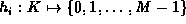
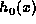
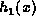
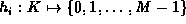
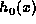
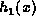
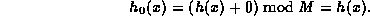
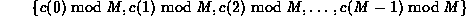

Data Structures and Algorithms
with Object-Oriented Design Patterns in C++
Data Structures and Algorithms
with Object-Oriented Design Patterns in C++An alternative method of dealing with collisions which entirely does away with the need for links and chaining is called open addressing . The basic idea is to define a probe sequence for every key which, when followed, always leads to the key in question.
The probe sequence is essentially a sequence of functions
where  is a hash function, .
To insert item x into the scatter table,
we examine array locations , , ...,
until we find an empty cell.
Similarly, to find item x in the scatter table
we examine the same sequence of locations in the same order.
is a hash function, .
To insert item x into the scatter table,
we examine array locations , , ...,
until we find an empty cell.
Similarly, to find item x in the scatter table
we examine the same sequence of locations in the same order.
The most common probe sequences are of the form

where  .
The function h(x) is the same hash function that we have seen before.
I.e., the function h maps keys
into integers in the range from zero to M-1.
.
The function h(x) is the same hash function that we have seen before.
I.e., the function h maps keys
into integers in the range from zero to M-1.
The function c(i) represents the collision resolution strategy. It is required to have the following two properties:


must contain every integer between 0 and M-1. This second property ensures that the probe sequence eventually probes every possible array position.
 Copyright © 1997 by Bruno R. Preiss, P.Eng. All rights reserved.
Copyright © 1997 by Bruno R. Preiss, P.Eng. All rights reserved.